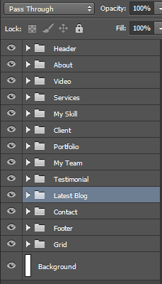

Nandine Portfolio is a clean, Creative and highly professional template design. Super easy to use Nandine template for any portfolio or CV realted websites. The version has all the functionalities to display any kinds of portfolio/CV realted websites in a beautiful way.

I've used the following images, icons or other files as listed.
Once again, thank you so much for purchasing this Landing Page
Email: support@themeasia.net